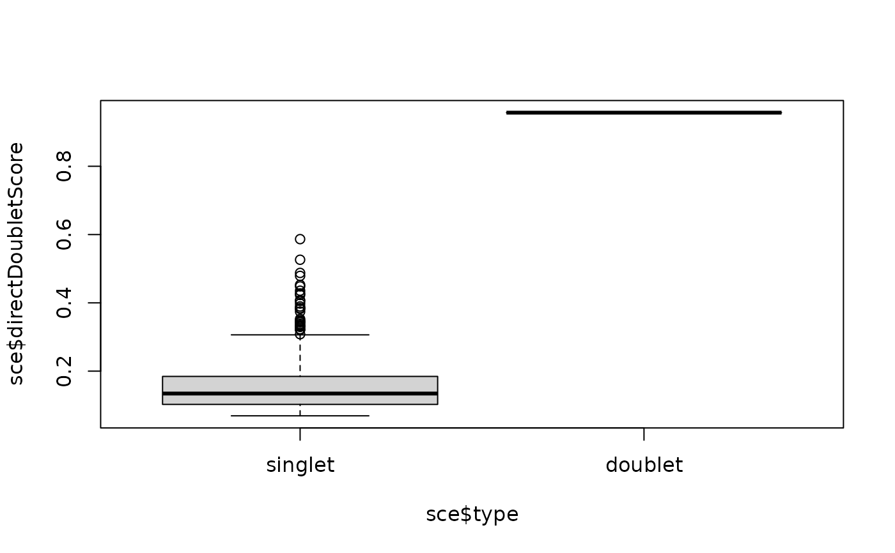

Trains a classifier directly on the expression matrix to distinguish artificial doublets from real cells.
Usage
directDblClassification(
sce,
dbr = NULL,
processing = "default",
iter = 2,
dims = 20,
nrounds = 0.25,
max_depth = 6,
...
)Arguments
- sce
A
SummarizedExperiment-class,SingleCellExperiment-class, or array of counts.- dbr
The expected doublet rate. By default this is assumed to be 1% per thousand cells captured (so 4% among 4000 thousand cells), which is appropriate for 10x datasets. Corrections for homeotypic doublets will be performed on the given rate.
- processing
Counts (real and artificial) processing. Either 'default' (normal
scater-based normalization and PCA), "rawPCA" (PCA without normalization), "rawFeatures" (no normalization/dimensional reduction), "normFeatures" (uses normalized features, without PCA) or a custom function with (at least) arguments `e` (the matrix of counts) and `dims` (the desired number of dimensions), returning a named matrix with cells as rows and components as columns.- iter
A positive integer indicating the number of scoring iterations. At each iteration, real cells that would be called as doublets are excluding from the training, and new scores are calculated.
- dims
The number of dimensions used.
- nrounds
Maximum rounds of boosting. If NULL, will be determined through cross-validation.
- max_depth
Maximum depths of each tree.
- ...
Any doublet generation or pre-processing argument passed to `scDblFinder`.
Value
A SummarizedExperiment-class
with the additional `colData` column `directDoubletScore`.
Examples
sce <- directDblClassification(mockDoubletSCE(), artificialDoublets=1)
#> Creating ~517 artificial doublets...
#> Round 1: 17 excluded from training.
#> Round 2: 17 excluded from training.
boxplot(sce$directDoubletScore~sce$type)
